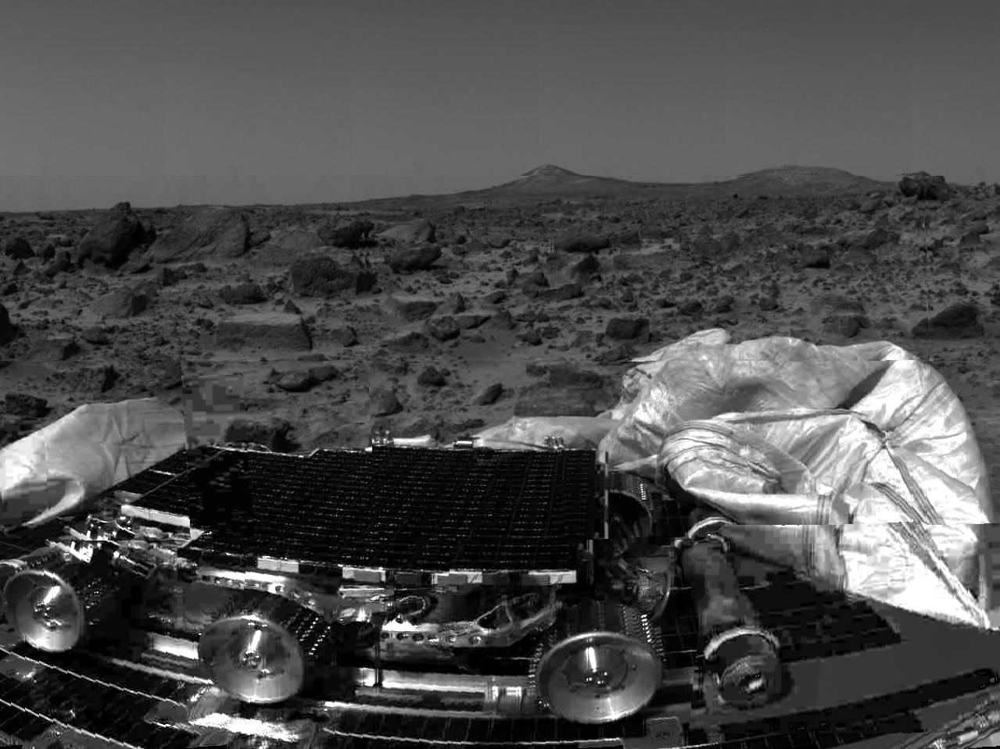
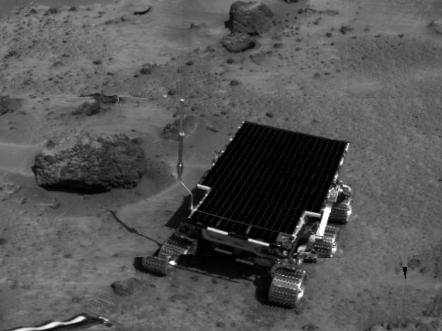

Sojourner was NASA's first Mars rover, part of the Mars Pathfinder mission. The Pathfinder spacecraft landed on Mars on July 4, 1997, and Sojourner was deployed onto the Martian surface the following day. This small robotic rover was designed to explore the Martian surface and study nearby rocks and soil.
Sojourner explored the area around its landing site in Ares Vallis, an ancient floodplain in the northern hemisphere of Mars. It used cameras and an instrument called the Alpha Proton X-ray Spectrometer (APXS) to examine rocks and soil. Its mission also demonstrated that a small robotic rover could move across the Martian surface and conduct scientific investigations.
Sojourner examined several Martian rocks, including Barnacle Bill and Yogi, using its cameras and scientific instruments. Its Alpha Proton X-ray Spectrometer helped scientists study the chemical composition of rocks and soil. The rover returned 550 images and performed chemical analyses at several locations near its landing site.
These investigations provided valuable information about the composition of Martian rocks and soil. The mission also demonstrated the usefulness of mobile robotic vehicles for exploring other planets.
Sojourner was designed for a seven-day mission, but it continued operating for 83 days. The final data transmission from the Pathfinder spacecraft was received on September 27, 1997. Attempts to restore communication were unsuccessful, and the Pathfinder mission was officially terminated on March 10, 1998.
Although its mission ended, Sojourner became an important milestone in robotic space exploration. The rover and its Pathfinder lander remain on Mars.

The undeployed Sojourner rover is seen still attached to a lander petal on its first day on Mars. Parts of the lander petal and a deflated airbag can be seen in the foreground. The rectangular rock on the right, called "Flat Top", was a possible target for the rover's scientific instrument.
Image Credit: NASA/JPL | NASA Image Source (PIA00632)

Sojourner is seen near the rock known as "Barnacle Bill" in one of the first images taken after the rover's deployment. It later moved closer to the rock to examine it using its Alpha Proton X-ray Spectrometer (APXS), located at the rear of the rover.
Image Credit: NASA/JPL | NASA Image Source (PIA00638)